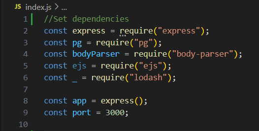
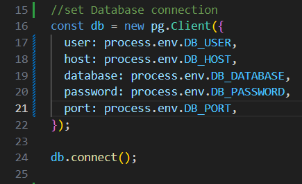
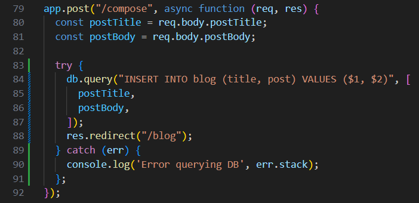
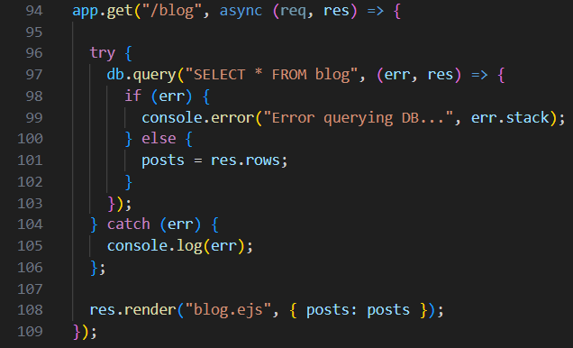
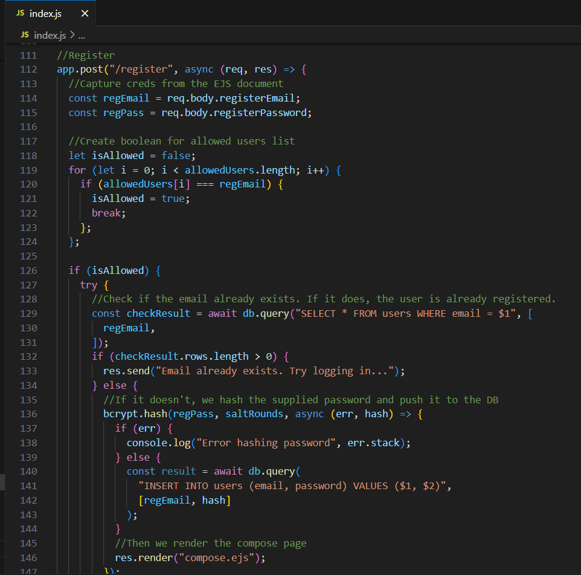
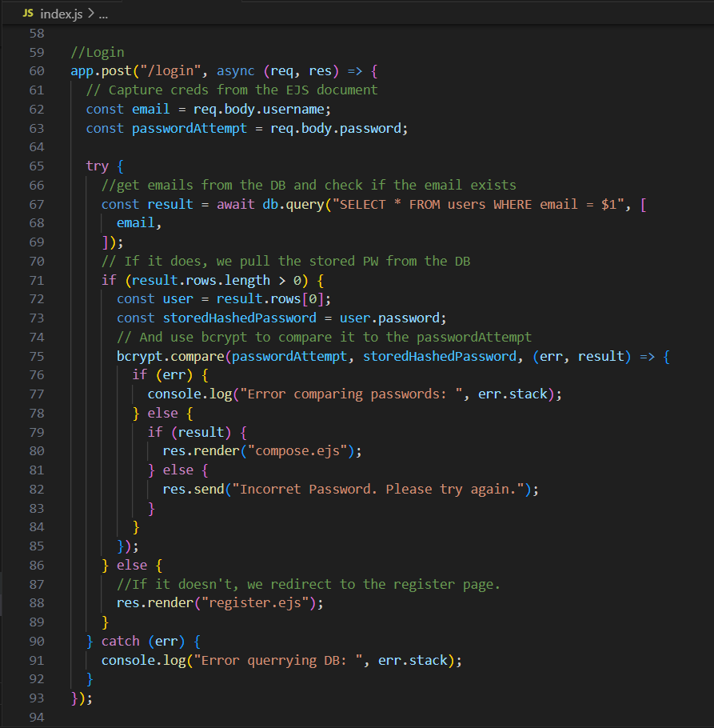
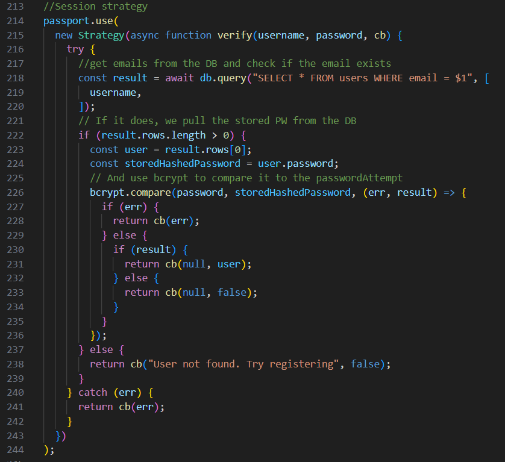
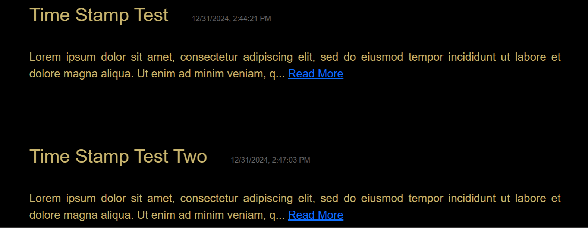

Thank you for taking the time to check out my Bio. Allow me to introduce myself. My name is...
I was a normal kid brought up in a normal lower-middle class family in a rural town in Northeast Arkansas.
Destined to be nothing more than a construction worker, but born with an exceptional mind that only
seeks to analyze and understand new concepts and new contructs. Raised in the 1980's with no technology
it seemed that my fate was sealed.
But then something miraculous happened. I was gifted a Tandy TRS-80 computer, and the only thing that was
included, besides the base operating system, was a compiler for the BASIC programming language.
I was entrhalled with the concept of being able to tell a computer what to do. I learned everything I could
from the documentation that came with the software. I was hooked and wanted to learn so much more.
But I had no avenue, unfortunately, to pursue that intrest further.
And so it seemed to be. I followed my pre-determined destiny of manual labor. Learning how to work hard
for very little. I started with basic work like dish washing and making pizzas. Then I moved on to working
on my grandfather's cattle farm. The work was harder but the pay was better and I learned valuable skills.
Eventually I went on to not only enter the construction field, but manage construction projects, consult on
process flow efficiency in production facilities, and eventually got my Commercial Driver's License and began
driving semi trucks in construction settings.
In 2020 the most horrific yet most amazing thing happened: COVID 19 hit the United States. I suddenly
had all the time in the world, and all the money I needed. I discovered Udemy.com and put my money
to good use. I began to learn to code. C++, Python, Java, JavaScript, it was all there. And I began
to absorb that knowledge like a sponge.
Skip ahead a few years and I found myself using my C++ skills to save a game server that was going under.
My propencity for logical algorithms made it possible to keep the server alive for an extra year or two,
and I am now using those same skills on my own project server for the same game. I then used my Java skills
to create and publish my first Android app.
Then I formed my company, Triple Shot Development, LLC. Since then, in the emulator gaming community,
I have become the developer...
If you are still reading, I sincerely appreciate your interest. Continue on to see examples
of my skills.
Thank you for taking the time to visit my bio/portfolio page. Due to the simplicity required
by GitHub there is no backend functionality for this site. The code available on GitHub will
reflect that simplicity.
However, throughout this site you will find many snippets and screenshots of code from my many
projects that I hope will showcase the skills that I can bring to bear for any potential employer.
Basic Node.js and Database interaction...

Setting up the dependencies for a Node.js Web Application.

Connecting to a database and using environment variables to mask the credentials.

Add a new blog post to our PostgreSQL database...

Retrieve saved blog posts from the database and display them. Of course each query is wrapped in
a try/catch block to catch any errors from the database connection.
Authentication Examples...

I agree. And I take it seriously. Here you can see a registration post route using
bcrypt and multiple (10 in this case) salt rounds to hash the password before account
creation. This particular example also checks the registration email against a list of
allowed users. This list is also protected inside of a .env file so the email addresses
aren't in the code.

Again we use bcrypt, specifically the 'compare' method, to check the user input
against the hashed password stored in the database, or redirect to the register
page if the user doesn't exist.

Here we implement Passport.js for authentication, again using the industry standard bcrypt library.
This allows us to set a session token so the user doesn't have to log in on every visit. This fuction
also returns a "user" object which we can use for many things.
Good Design is Paramount...

I decided that I wanted the title of the blog posts to include a timestamp. This is also
stored in the database so it is locked to the post that it belongs to. Sometimes
its the little things that really put a design over the top. I try to keep a keen eye for
this type of detail.
I prefer using Bootstrap in my frontend. It is quick, easy, aesthetically pleasing, and
infinitely customizable.
And just to seal the deal...
Here are some other skills that I have that you might find useful...
-
Linux
-
GitHub
-
OAuth
-
MongoDB
-
MySQL
-
Java
-
C++
-
Python
I am also constantly leveling up my skills. I learn new skills quickly and always try
to implement those skills in new projects to really commit them to memory.
Thank you again for taking the time to check out my page. I truly appreciate your interest.
If you feel like I might be a good fit for your company please reach out at your earliest
convenience at one of the contact methods listed on my resume. I can provide many more
examples of my skills upon request, or I would be happy to build an example app for you.
I look forward to an opportunity to speak with you, and I am excited to fulfill what has
truly been a life-long dream for me.
A random picture of my dog because, well, I freaking love my dog.
Thanks again!!